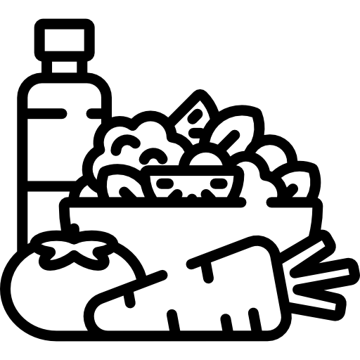
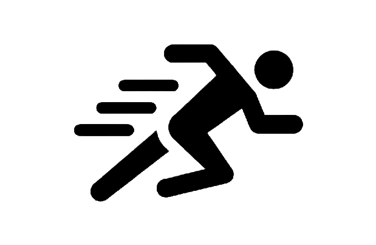

Build Healthy Eating Habits
- Eat a variety of vegetables, especially dark green, red, and orange vegetables (3 or more servings a day).
- Eat a variety of fruits (2 or more servings a day).
- Eat whole-grain, high-fiber breads and cereals (3 to 6 servings a day)
- Drink fat-free or low-fat milk and eat low-fat dairy products.

A healthy lifestyle and simple behavior changes can help you get a good night's sleep
- Limit electronics. Limit usage of electronic devices and blue light 45–60 minutes before bed
- Maintain healthy sleep environment.
- Limit caffeine and other stimulants.
- Keep a consistent sleep-wake schedule.

Make exercise a daily habit
- Piece your workout together. You don't need to get all your exercise at one time.
- Exercise with a friend.
- Move your feet before you eat.
- Turn sit time into fit time.